หัวข้อในการเรียนรู้สำหรับการออกแบบวงจรลอจิก (Logic Design)#
▷ Logic Design#
หากสนใจและต้องการเรียนรู้เกี่ยวกับการออกแบบวงจรดิจิทัลหรือวงจรลอจิก (Logic Design) เช่น ไอซีประเภทลอจิกเกต (Logic Gate ICs) หรือ ชิปโปรแกรมได้เชิงลอจิก เช่น FPGA (Field-Programmable Gate Arrays) จะมีหัวข้อที่เกี่ยวข้องอะไรบ้างที่ควรได้ศึกษาเรียนรู้ตามลำดับ บทความนี้ได้รวบรวม จัดแบ่งเป็นหมวดหมู่และมานำเสนอไว้
ก่อนอื่นลองมาทบทวนความหมายของคำศัพท์ต่อไปนี้
-
Logic Design กล่าวถึง หลักการ วิธีการ และเครื่องมือที่ใช้การออกแบบวงจรระดับลอจิก (เชิงตรรกะ) เป็นการเชื่อมโยงความรู้หรือทฤษฎี เช่น พีชคณิตบูลีน (Boolean Algebra) การออกแบบสร้างวงจรลอจิก (Logic Circuits) และวงจรลอจิกประกอบด้วยลอจิกเกตเป็นหน่วยย่อยพื้นฐานของวงจร (Basic Building Blocks) สามารถนำมาต่อกันตามรูปแบบที่เหมาะสม เป็นระบบดิจิทัลที่มีความซับซ้อนได้
-
Logic Circuits เป็นวงจรที่ใช้กับสัญญาณดิจิทัล หรือ สัญญาณลอจิก
- วงจรมีอินพุตและเอาต์พุต (Inputs & Outputs, Interfaces) และประกอบด้วยวงจรย่อยและการเชื่อมต่อกันและแบ่งได้หลายชั้น (Component Instantiation & Interconnections, Hierarchical & Structural Composition)
- วงจรมีสถานะทางลอจิกที่ ไม่ใช่แค่ '0' หรือ '1' (Multi-value Logic) เช่น มีสถานะ 'Z' (High-Impedance) อาจมีหน่วยความจำอยู่ภายใน (เช่น แลตช์ ฟลิปฟลอป รีจิสเตอร์)
- สัญญาณอินพุต-เอาต์พุต และสัญญาณภายใน อาจเป็นแบบบิตเดี่ยวหรือหลายบิต
- วงจรอาจมีสัญญาณ Clock ควบคุมการทำงานของหน่วยความจำ เช่น ในวงจรแบบ Synchronous Logic Design ที่ใช้สัญญาณ Clock กำหนดจังหวะการทำงานของฟลิปฟลอป
- ฟังก์ชันการทำงาน เช่น การดำเนินการเชิงลอจิกกับสัญญาณดิจิทัลหรือข้อมูล และเกิดขึ้นได้พร้อมกัน (Concurrent Logical Operations)
- การเปลี่ยนแปลงเชิงลอจิกสำหรับสัญญาณไฟฟ้าจริง มีความหน่วงหรือล่าช้าเกิดขึ้นได้ (ในระดับนาโนวินาที)
-
Digital Electronics เกี่ยวข้องกับการวิเคราะห์และการออกแบบวงจรอิเล็กทรอนิกส์ที่ใช้กับสัญญาณดิจิทัล การสร้างลอจิกเกตในรูปของวงจรอิเล็กทรอนิกส์ และในระดับย่อยลงไปต่ำกว่าลอจิกเกต เช่น ระดับทรานซิสเตอร์ วงจรรวมหรือไอซี (Integrated Circuit: IC) ที่ประกอบด้วยทรานซิสเตอร์มีขนาดเล็กมากและจำนวนมาก
-
Microelectronics: เกี่ยวข้องกับ คุณสมบัติของสารกึ่งตัวนำ (Semiconductor) ทรานซิสเตอร์ประเภทต่าง ๆ (Transistors) และฟังก์ชันการทำงาน การนำมาสร้างเป็นวงจร และการผลิตวงจรรวม
-
VLSI Design: การออกแบบวงจรรวมดิจิทัลที่มีความซับซ้อนสูง (พิจารณาตามจำนวนของทรานซิสเตอร์)
-
SoC (System-on-Chip) Design: การออกแบบวงจรรวมที่มีลักษณะเป็นระบบและมีความซับซ้อนสูงไว้ในชิปเดียวกัน เช่น ประกอบด้วยซีพียู (CPU) วงจรรอบข้าง (Peripherals) และเชื่อมต่อด้วยระบบบัส
การออกแบบวงจรและระบบดิจิทัล อาจจำแนกได้ตามระดับในการออกแบบ (เรียงจากระดับล่างขึ้นบน)
- ในระดับ "อุปกรณ์" (Device): เกี่ยวข้องกับการศึกษาคุณลักษณะของทรานซิสเตอร์ เช่น MOSFET ที่สามารถนำมาสร้างเป็นวงจรอิเล็กทรอนิกส์ได้
- ในระดับ "วงจร" (Circuit): เกี่ยวข้องกับเทคนิคการออกแบบและวิเคราะห์วงจรดิจิทัล โดยใช้ทรานซิสเตอร์ การใช้ลอจิกเกต หรือใช้วงจรที่ได้มีการออกแบบไว้แล้ว ใช้แนวทางการออกแบบแบบในลักษณะ Bottom-up รวมถึงแนวทางการออกแบบวงจรเพื่อนำมาในได้อีก (IP Design Reuse)
- ในระดับ "ระบบ" (System): เกี่ยวข้องกับเทคนิคการออกแบบและวิเคราะห์ระบบดิจิทัล ซึ่งถูกแบ่งย่อยได้เป็นระบบย่อยลงไปจนถึงระดับวงจร ใช้แนวทางการออกแบบในลักษณะ Top-down
ดังนั้นในการเรียนรู้เกี่ยวกับการออกแบบวงจรลอจิก โดยทั่วไปแล้ว ก็จะเริ่มต้นที่ระดับลอจิกเกตแล้วสร้างเป็นวงจร ที่มีฟังก์ชันการทำงานในรูปแบบต่าง ๆ แต่ในส่วนของการสร้างลอจิกเกตในระดับทรานซิสเตอร์ รวมถึงการออกแบบเพื่อสร้างไอซี ก็จะเป็นระดับล่างลงไป เกี่ยวข้องกับวิชา Physical VLSI Design เป็นต้น
อย่างไรก็ตาม ในยุคปัจจุบัน เครื่องมือที่เป็นซอฟต์แวร์ประเภท EDA (Electronic Design Automation) มีความก้าวหน้าอย่างมาก การออกแบบวงจรดิจิทัล สามารถทำได้ง่ายขึ้น เช่น การใช้ภาษาคอมพิวเตอร์ HDL เพื่อเขียนอธิบายการทำงานของวงจรลอจิก แล้วสามารถแปลงให้เป็นวงจรลอจิกเกตได้โดยอัตโนมัติ รวมถึงการใช้ชิปประเภท FPGA เพื่อสร้างวงจรลอจิกและทดสอบการทำงานได้จริง ไม่จำเป็นต้องนำไปจ้างโรงงานเพื่อผลิตชิปหรือไอซีซึ่งมีต้นทุนที่สูงมาก
ภาษา HDL สำหรับวงจรดิจิทัลที่นิยมใช้ในปัจจุบันได้แก่ VHDL และ Verilog
- HDL = Hardware Description Language)
- ใช้อธิบายการทำงานของฮาร์ดแวร์ โดยสร้างเป็น "โมเดล" (Models) ของวงจรดิจิทัล
- นำไปใช้ได้กับโปรแกรมจำลองการทำงานของวงจรดิจิทัล (HDL-based Logic Simulation)
- ศึกษาและทำความเข้าใจ ตรวจสอบการทำงานและความถูกต้องของแบบจำลองวงจร
- นำไปใช้ได้กับโปรแกรมสังเคราะห์วงจรดิจิทัล (HDL-based Logic Synthesis)
- สร้างเป็นวงจรที่เหมาะสมจากโค้ด HDL ได้โดยอัตโนมัติ โดยใช้ซอฟต์แวร์สังเคราะห์วงจร วิธีการนี้ช่วยลดระยะเวลาในการออกแบบวงจรและพัฒนาฮาร์ดแวร์ดิจิทัล
- นำไปใช้สร้างโมเดลของวงจรดิจิทัลในระดับของนามธรรม (Levels of Abstraction) ที่ต่างกันได้ เช่น
- ระดับลอจิกเกต (Gate Level)
- ระดับการย้ายข้อมูลระหว่างรีจิสเตอร์ (RTL: Register Transfer Level) ตามจังหวะของสัญญาณ Clock ในวงจรซิงโครนัส (Synchronous Logic Design)
- VHDL = VHSIC (Very High Speed Integrated Circuit) HDL
- เริ่มต้นในประมาณปีคศ. 1983 โดย Department of Defense (USA)
- มีการกำหนดเป็นมาตรฐาน IEEE Standard 1076-1987
- มีการอัพเดทปรับปรุง VHDL ตามลำดับ เช่น IEEE-1076 1993 / 2000 / 2002 / 2008
- Verilog
- คศ. 1985: เริ่มต้นพัฒนาและใช้งานโดยบริษัท Gateway Design Automation Co.
- คศ. 1995: ยอมรับเป็นมาตรฐาน IEEE Standard 1364-1995 และ IEEE Standard 1364-2001 ตามลำดับ
▷ การจำแนกหัวข้อในวิชา Logic Design#
การจัดหมวดหมู่ของหัวข้อพื้นฐานที่เกี่ยวข้องกับการออกแบบวงจรลอจิก มีตัวอย่างดังนี้
- พื้นฐานเกี่ยวกับระบบจำนวนตัวเลข (Number Systems)
- พื้นฐานเกี่ยวกับพีชคณิตบูลีน (Boolean Algebra)
- พื้นฐานเกี่ยวกับลอจิกเกต (Logic Gates)
- พื้นฐานเกี่ยวกับวงจรลอจิก (Logic Circuits)
- พื้นฐานเกี่ยวกับวงจรคอมบิเนชัน (Combinational Logic Circuits)
- พื้นฐานเกี่ยวกับอุปกรณ์หน่วยความจำในวงจรซีเควนเชียล (Sequential Logic Circuits)
- พื้นฐานเกี่ยวกับ HDLs (Hardware Description Languages)
- พื้นฐานเกี่ยวกับชิปที่โปรแกรมได้เชิงลอจิก (Programmable Logic Devices)
พื้นฐานเกี่ยวกับระบบจำนวนตัวเลข
- สัญญาณและข้อมูล (ในการประมวลผลแบบดิจิทัล)
- ระบบจำนวนตัวเลข (Number Systems) และเลขฐาน
- เลขจำนวนเต็ม (Integer Numbers): unsigned, sign-bit magnitude, 1’s complement, 2’s complement (signed)
- เลขทศนิยม (Floating-Point Numbers) ตามมาตรฐาน IEEE Standard 754 (single and double precision; floating-point arithmetic)
- โค้ดหรือรหัสข้อมูล (Code) ในรูปแบบต่าง ๆ เช่น Binary, Gray, BCD (Binary-Coded Decimal), Excess-3, ASCII รวมถีงการแปลงโค้ด เช่น Binary Code - Gray Code
พื้นฐานเกี่ยวกับพีชคณิตบูลีน (Boolean Algebra)
- ตัวแปรบูลีนและตัวดำเนินการ (Boolean Variables, Literals, Operators)
- นิพจน์บูลีน (Boolean Expressions)
- สัจพจน์และทฤษฎีบทของพีชคณิตบูลีน (Postulates and Theorems of Boolean Algebra) เช่น
- ทฤษฎีบทหรือกฎของเดอมอร์แกรน (De Morgan Theorem)
- ทฤษฎีบทหรือกฎต่างๆ ที่นำมาใช้ในการแปลงรูปนิพจน์บูลีนได้ (Algebraic Manipulation) เชื่อมโยงสู่ ลอจิกเกตพื้นฐานแบบต่างๆ เช่น NOT, NAND, NOR, OR, AND, XOR, XNOR เป็นต้น
- "มินเทอม" (Minterms) และ "แมกซ์เทอม" (Maxterms) และรูปสมการบูลีนแบบ SOP (Sum of Products) และ POS (Product of Sums)
- วิธีการลดรูปสมการบูลีน (Simplification) เช่น Karnaugh Map และ Quine–McCluskey Tabular Method เป็นต้น
พื้นฐานเกี่ยวกับลอจิกเกต (Logic Gates)
- ลอจิกเกตพื้นฐานแบบต่างๆ และตารางความจริงของลอจิกเกต (Truth Table)
- ลอจิกเกตแบบอเนกประสงค์ (Universal Logic Gates): การใช้ NAND2 (2-Input NAND) หรือ NOR2 (2-Input NOR) ในการสร้างวงจรลอจิก
- สัญลักษณ์ของลอจิกเกตพื้นฐาน และการวาดผังวงจร (Schematic Capture)
- การใช้ไอซีลอจิกเกตมาตรฐาน (Standard Discrete Logic ICs) เช่น 74HCxx Series เพื่อสร้างวงจรลอจิก (เช่น บนแผงต่อวงจร)
- การจำแนกตามตระกูลของลอจิกเกต (Logic Gate Families): TTL / LVTTL และ CMOS / LVCMOS เป็นต้น
- I/O: เอาต์พุตสามสถานะ (Tri-state Logic) เอาต์พุตแบบ Open-Collector / Open-Drain และอินพุตแบบชมิตต์ทริกเกอร์ (Schmitt-Trigger)
- การเชื่อมทางไฟฟ้าระหว่างขา I/O ของลอจิกเกตต่างตระกูลกัน และอาจมีระดับและช่วงแรงดันไฟฟ้าที่แตกต่างกัน และข้อควรระวัง
- คุณลักษณะทางไฟฟ้าของลอจิกเกต (Electrical and Timing Properties of Logic Gates) เช่น
- Fan-Out
- Propagation Delays
- Switching Times
- Voltage Level Parameters (VOH / VOL / VIH / VIL)
- Noise Margin
- Power Consumption
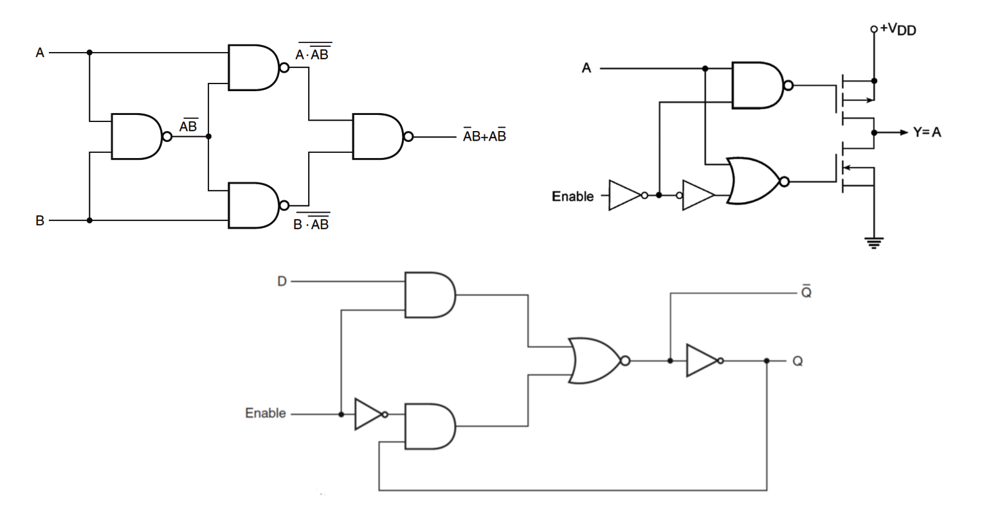
รูป: ตัวอย่างผังวงจรในระดับลอจิกเกต
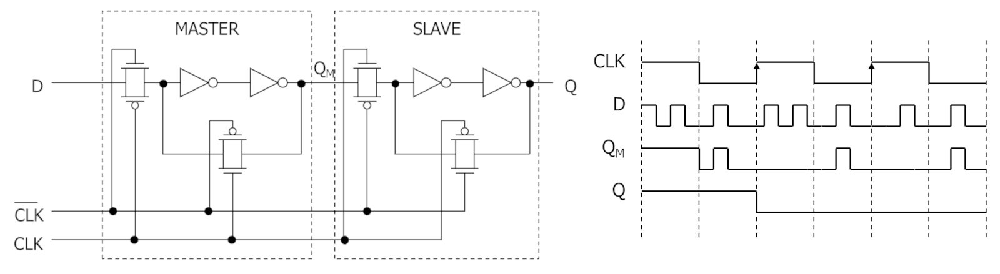
รูป: ตัวอย่างผังวงจรลอจิกและแผนภาพแสดงการเปลี่ยนแปลงของสัญญาณในวงจรเชิงเวลา
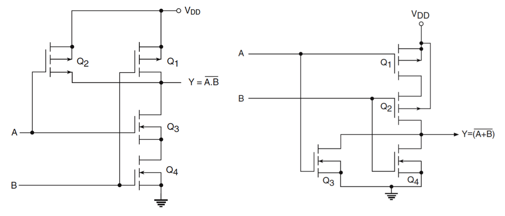
รูป: ตัวอย่างผังวงจรของลอจิกเกต NAND2 และ NOR2 ในระดับทรานซิสเตอร์แบบ CMOS
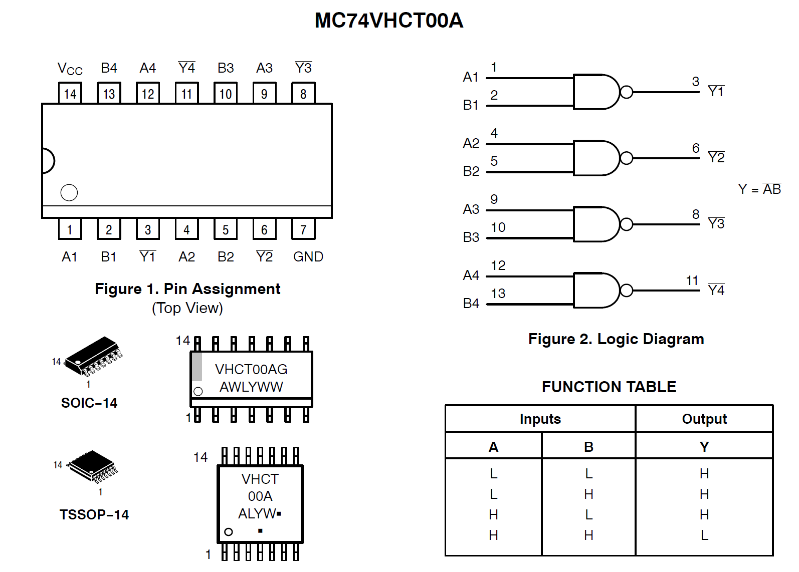
รูป: ตัวอย่างไอซีลอจิกเกต MC74VHCT00A (Quad 2-Input NAND Gates)
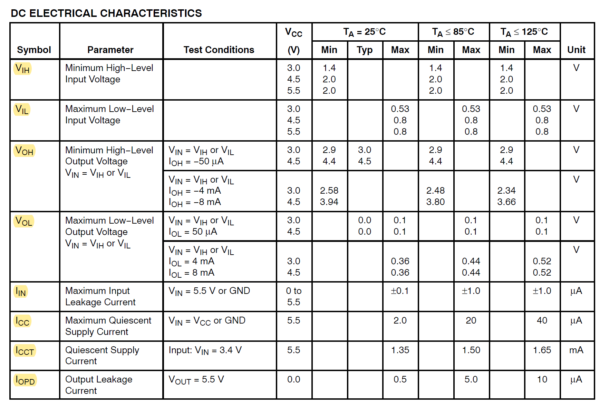
รูป: ตัวอย่างคุณสมบัติทางไฟฟ้าของไอซีลอจิกเกต MC74VHCT00A
พื้นฐานเกี่ยวกับวงจรลอจิก (Logic Circuits)
- วงจรที่ไม่มีหน่วยความจำ (Combinational Circuits) หรือเรียกว่า "วงจรลอจิกจัดหมู่" หรือ "วงจรตรรกะจัดหมู่" หรือ "วงจรคอมบิเนชัน" ซึ่งเป็นวงจรที่ค่าลอจิกของเอาต์พุตขึ้นอยู่กับค่าของอินพุตของวงจรเท่านั้น
- วงจรที่มีหน่วยความจำ (Sequential Circuits)
หรือเรียกว่า "วงจรลอกจิกเชิงลำดับ" หรือ "วงจรซีเควนเชียล" ซึ่งเป็นวงจรที่ค่าของเอาต์พุตขึ้นอยู่กับค่าของอินพุตและค่าในหน่วยความจำ (สถานะ) ของวงจร
แบ่งแยกได้เป็นสองกลุ่มย่อยคือ
- วงจรซีเควนเชียลแบบซิงโครนัส (Synchronous Sequential Circuits)
- วงจรซีเควนเชียลแบบอะซิงโครนัส (Asynchronous Sequential Circuits)
- การออกแบบและวิเคราะห์การทำงานของวงจรลอจิกประเภทต่าง ๆ
พื้นฐานเกี่ยวกับวงจรคอมบิเนชัน (Combinational Logic Circuits)
- วงจรคอมบิเนชันสองชั้น (Two-Level Logic Networks) และแบบหลายชั้น
- วงจรตามแบบ Sum-of-Products (SOP) และ Product-of-Sums (POS) จากตารางค่าความจริง
- วงจรคำนวณทางคณิตศาสตร์หรือวงจรคำนวณเชิงเลข (Arithmetic Circuits)
- วงจรบวกเลขบิตเดียว (Half Adder, Full Adder) และวงจรบวกลบเลขหลายบิต (Adder/Subtracter, Carry-Ripple Adder, Carry-Lookahead Adder, …)
- วงจรคูณ (Multipliers) สำหรับเลขจำนวนเต็ม
- วงจรเลื่อนบิต (Bit Shifter) เช่น Barrel Shifter
- วงจรเปรียบเทียบค่า (Comparators) เปรียบเทียบมากกว่า-น้อยกว่า-เท่ากับ
- วงจรหน่วยประมวลผลคณิตศาสตร์และตรรกะ (Arithmetic-Logic Unit: ALU)
- วงจรเข้าและถอดรหัส (Encoders / Decoders)
- วงจรเข้ารหัสแบบไบนารี่ (Binary Encoder)
- วงจรเข้ารหัสตามความสำคัญ (Priority Encoder)
- วงจรถอดรหัสแบบไบนารี่ (Binary Decoder)
- วงจรแปลงรหัส BCD เป็นส่วนแสดงผลแบบ 7 ส่วน (BCD to 7-Segment Decoder)
- การใช้งาน 7-Segment Display ทั้งแบบ Common-Anode และ Common-Cathode
- วงจรมัลติเพลกซ์ (Multiplexers) และ วงจรดิมัลติเพลซ์ (Demultiplexers)
- วงจรแปลงรหัส (Code Converters) เช่น Binary-to-Gray Converter
- ไอซีลอจิกมาตรฐานในการสร้างวงจรคอมบิเนชัน
พื้นฐานเกี่ยวกับอุปกรณ์หน่วยความจำในวงจรซีเควนเชียล (Sequential Logic Circuits)
- อุปกรณ์ "ไบสเตเบิล" (Bistable) ซึ่งมีสถานะเสถียร (Stable States) สองสถานะเท่านั้น
- ตัวอย่างการต่อลอจิกเกต NOT แบบ CMOS สองตัว อนุกรมกันและต่อวงจรแบบป้อนกลับ (Feedback)
- วงจรที่มีความจำประเภท "แลตช์" (Latch) จำแนกตามชนิดได้ เช่น RS-type, D-type
- การอัปเดตค่าของเอาต์พุต (Q และ /Q) ที่เปลี่ยนแปลงตามค่าลอจิกของสัญญาณควบคุม (Level-sensitive)
- การสร้าง RS Latch จากลอจิกเกต 2 ตัว โดยใช้เพียฝ NAND2 หรือ NOR2
- การแปลงจากวงจรที่ใช้ NAND2 เป็นวงจรที่ใช้ NOR2 (หรือกลับกัน) ในการสร้าง RS Latch
- การเขียนตารางค่าเอาต์พุตในกรณีต่างๆของอินพุต (R และ S) ของ RS Latch
- การสร้าง RS Latch ที่มีขาอินพุตควบคุม Enable (RS Latch with Enable Input)
- การสร้าง Data Latch (Gated D-type)
- การสร้างสัญญาณกระตุ้นแบบพัลส์ (Pulse) สั้นๆ (ในระดับนาโนวินาที) จากสัญญาณ Clock เช่น เพื่อนำไปต่อกับขาควบคุม Enable ของวงจร RS Latch with Enable
- การใช้สัญญาณอินพุตควบคุมทั้งแบบ Asynchronous / Synchronous Control Input เช่น Clear, Preset, Enable เป็นต้น
- วงจรที่มีความจำประเภท "ฟลิปฟลอป" (Flip-Flop) จำแนกตามชนิด เช่น RS-type, JK-type, D-type, T-type
- การอัปเดตค่าของเอาต์พุต (Q และ /Q) ที่เปลี่ยนแปลงตามจังหวะการกระตุ้นด้วยขอบสัญญาณกระตุ้น (Edge-triggered) เช่น สัญญาณนาฬิกา (Clock)
- การทำงานหรืออัปเดตค่าของฟลิปฟลอป จำแนกตามขอบสัญญาณขาขึ้น (Rising Edge / Positive Edge) และขาลง (Falling Edge / Negative Edge)
- การสร้าง Flip-Flop แบบต่างๆ เช่น สร้างจาก Gated D-type Latch
- การใช้สัญญาณอินพุตควบคุมทั้งแบบ Asynchronous / Synchronous Input สำหรับฟลิปฟลอป
- ตัวอย่างไอซีลอจิกมาตรฐานสำหรับแลตช์และฟลิปฟลอป
- การวิเคราะห์การทำงานในเชิงเวลา (Timing Analysis) ของวงจรซีเควนเชียล-ซิงโครนัส
- การวาดและทำความเข้าใจ "ไดอะแกรมเวลา" หรือ "แผนภาพเวลา" (Timing Diagram)
- พารามิเตอร์เชิงเวลา (Timing Parameters) ของแลตช์และฟลิปฟลอป เช่น ค่า Setup Time และ Hold Time (เวลาก่อนและหลังขอบสัญญาณ Clock ตามลำดับ) ของฟลิปฟลอป ค่า Clock-to-Q ของฟลิปฟลอป
- ปัญหา Metastability สำหรับฟลิปฟลอป
- ปัญหาของ Clock Jitter และ Clock Skew สำหรับฟลิปฟลอป
- วงจรรีจิสเตอร์ (Registers)
- การใช้สัญญาณอินพุตควบคุมสำหรับวงจรนับทั้งแบบ Asynchronous / Synchronous Input
- วงจรนับ (Counters) จำแนกตามประเภทย่อย เช่น
- วงจรนับแบบไบนารี (Binary Counter)
- วงจรนับขึ้น/นับลง (Binary Up/Down Counter)
- วงจรนับแบบโมดูโล (Modulo Counter)
- วงจรนับแบบวงแหวนหรือวนรอบ (Ring Counter) และวงจรนับแบบจอห์นสัน (Johnson Counter)
- การจำแนกระหว่างวงจรนับแบบซิงโครนัสและแบบอะซิงโครนัส
- การใช้สัญญาณอินพุตควบคุมสำหรับวงจรนับทั้งแบบ Asynchronous / Synchronous Input
- วงจรรีจิสเตอร์เลื่อนบิต (Shift Registers)
- พื้นฐานเกี่ยวกับ "เครื่องสถานะจำกัด" หรือ "ไฟไนท์สเตทแมชชีน" (Finite-State Machine: FSM)
- การจำแนกประเภทของ FSM เป็น 2 ประเภท ได้แก่
- Moore-type: เอาต์พุตที่ได้จะขึ้นอยู่กับสถานะในหน่วยความจำของ FSM เท่านั้น
- Mealy-type: เอาต์พุตที่ได้จะขึ้นอยู่กับสถานะในหน่วยความจำและอินพุตของ FSM
- การออกแบบ FSM
- การเขียนไดอะแกรมการเปลี่ยนสถานะ (State-Transition Diagram)
- การเขียนสมการบูลีนสำหรับสถานะถัดไป (Next-State Logic) และสำหรับเอาต์พุต (Output Logic)
- การลดจำนวนสถานะใน FSM ให้เหมาะที่สุด (FSM State Minimization)
- การเลือกรหัสให้สถานะของ FSM แบบต่างๆ (FSM State Encoding) เช่น Binary Coding, One-Hot Coding, Gray Coding
- การสร้าง FSM อยู่ในรูปของวงจรซีเควนเชียล (แบบซิงโครนัส)
- การจำแนกประเภทของ FSM เป็น 2 ประเภท ได้แก่
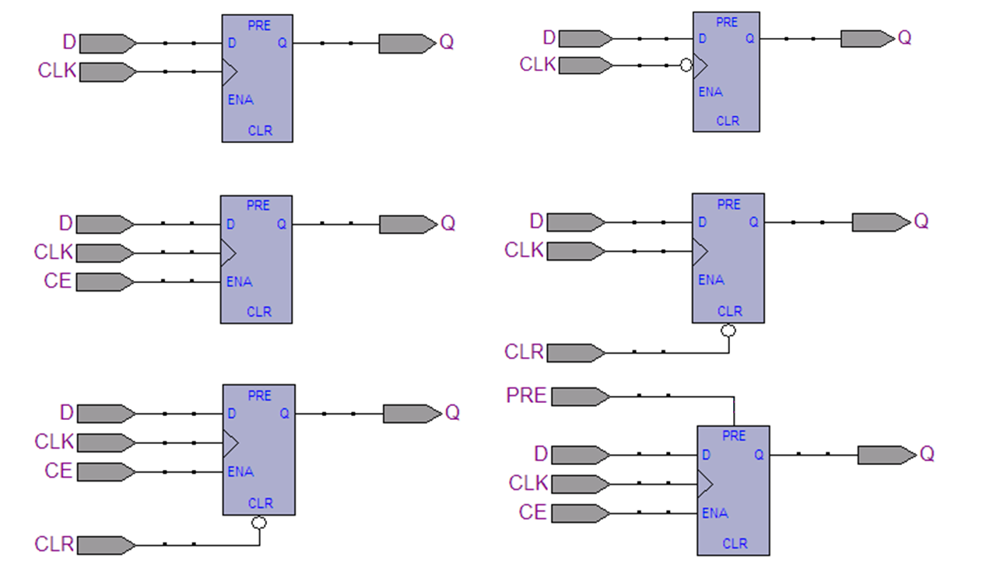
รูป: ตัวอย่างสัญลักษณ์ของ "ฟลิปฟลอป" ที่มีขาสัญญาณควบคุม และใช้สำหรับการวาดผังวงจร
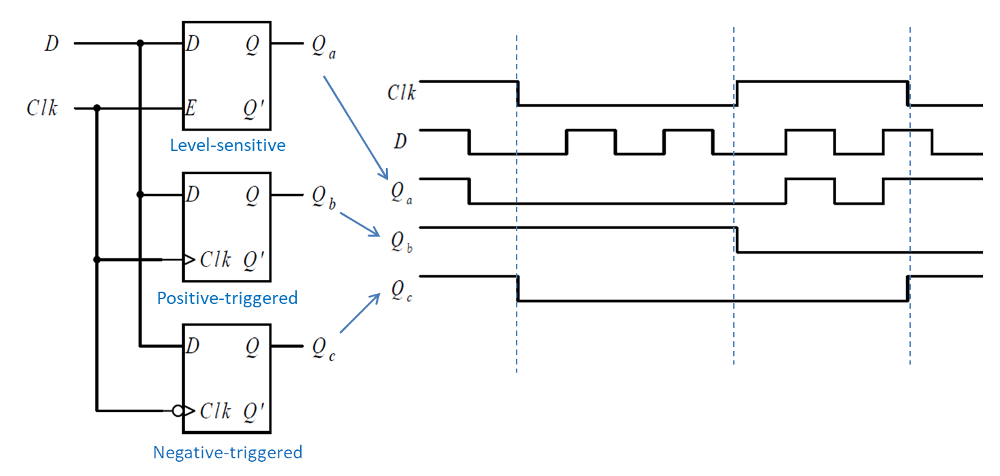
รูป: การเปรียบเทียบการเปลี่ยนแปลงสัญญาณในเชิงเวลาระหว่าง D-type Latch (Level-sensitive) กับ D-type Flip-Flop (Edge-triggered)
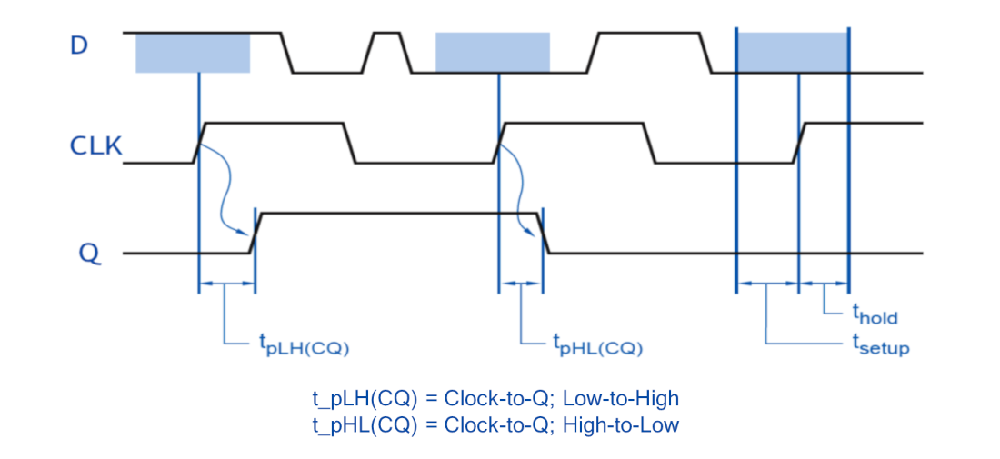
รูป: ตัวอย่างพารามิเตอร์เชิงเวลาที่เกี่ยวข้องกับการทำงานของ "ฟลิปฟลอป"
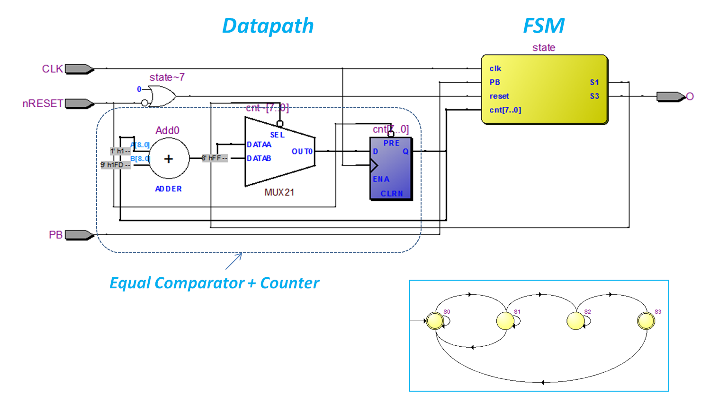
รูป: ตัวอย่างผังวงจรในระดับ Register-Transfer Level ที่ประกอบด้วยสองส่วนหลักคือ Datapath และ FSM (Finite-State Machine)
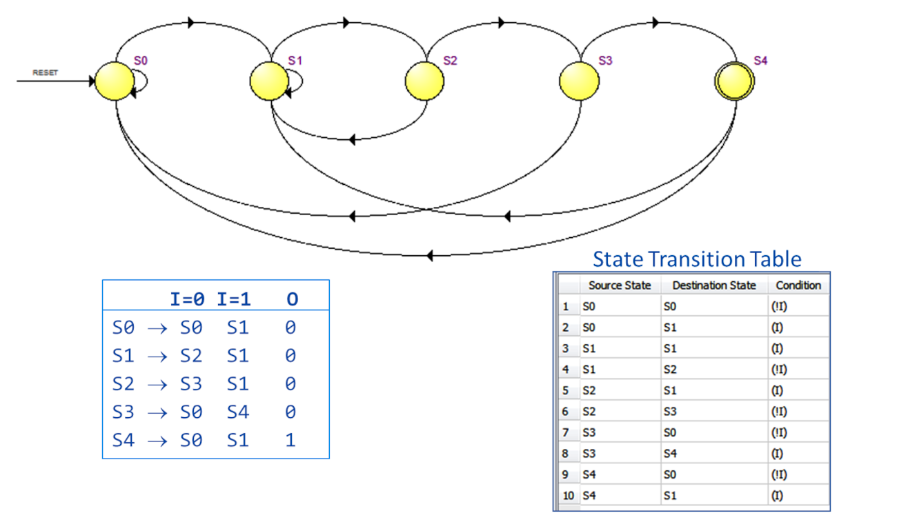
รูป: ตัวอย่างไดอะแกรมของสเตทแมชชีน หรือ ตารางแสดงสถานะลอจิกและการเปลี่ยนสถานะ (States & State Transitions) สำหรับ FSM
พื้นฐานเกี่ยวกับภาษา "วีเอชดีแอล" (VHDL)
- รูปแบบการสร้างโมเดลเพื่อจำลองการทำงานของวงจรดิจิทัลโดยใช้ VHDL เช่น รูปแบบ Data Flow, Structural และ Behavioral
- องค์ประกอบของวงจร หรือ "โมเดล" ในภาษา VHDL เช่น Entity & Architecture
- การใช้ Library ในภาษา VHDL ที่เป็นมาตรฐาน เช่น IEEE
- การใช้งานวงจรหรือโมเดลที่ได้เคยออกแบบไว้แล้ว
- ประโยคคำสั่งประเภทต่าง ๆ ในภาษา VHDL เช่น
- Concurrent Signal Assignments
- Processes
- With-Select
- Case-Is-When
- If-Then
- รูปแบบการสร้างโมเดลในภาษา VHDL สำหรับวงจรคอมบิเนชันแบบต่าง ๆ
- รูปแบบการสร้างโมเดลในภาษา VHDL สำหรับวงจรซีเควนเชียลแบบต่าง ๆ
- รูปแบบการสร้างโมเดลสำหรับ FSM
- การเขียน VHDL Testbench และการจำลองการทำงาน (VHDL Simulation)
- การเปรียบเทียบกับภาษา HDL ที่เป็นตัวเลือกอื่น เช่น Verilog HDL
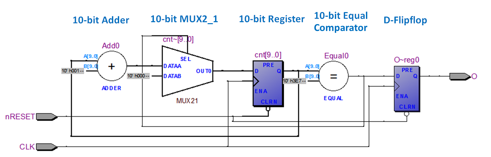
รูป: ตัวอย่างผังวงจรในระดับ Register-Transfer Level (RTL)
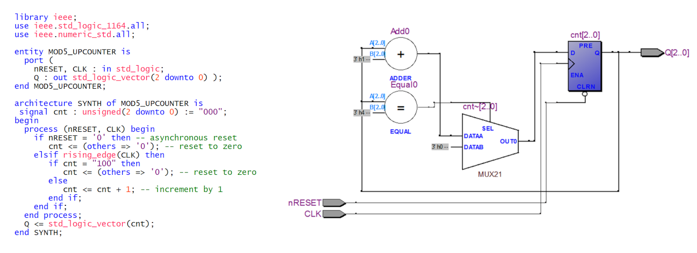
รูป: ตัวอย่างโค้ด VHDL สำหรับวงจร Modulo-5 Upcounter และการแปลงให้เป็นวงจรลอจิกในระดับ RTL โดยใช้ซอฟต์แวร์ Altera Quartus
พื้นฐานเกี่ยวกับชิปที่โปรแกรมได้เชิงลอจิก (Programmable Logic Devices)
- การใช้งานชิปที่สามารถโปรแกรมเชิงลอจิกใหม่ได้ เช่น CPLD / FPGA
- สถาปัตยกรรม องค์ประกอบพื้นฐาน และเทคโนโลยีหน่วยความจำที่ใช้ในการโปรแกรมชิปประเภทนี้
- ขั้นตอนและเครื่องมือการออกแบบวงจรดิจิทัลสำหรับ FPGA
- การวาดผังวงจร การสร้างแบบจำลองโดยใช้ภาษา เช่น VHDL การจำลองการทำงาน (Logic Simulation)
- การสังเคราะห์วงจร (Logic Synthesis)
- การวิเคราะห์การทำงานของวงจรเชิงเวลา (Static Timing Analysis)
- การทำขั้นตอน Logic Mapping และ Placment & Routing สำหรับวงจรลอจิกที่จะนำไปใช้กับชิป FPGA
- เทคนิคการออกแบบโดยใช้ชิป FPGA และ SoC FPGA
- การสร้างและใช้งาน IP Core การออกแบบวงจรคำนวณเชิงเลข (Digital Signal Processing Blocks)
- การออกแบบ CPU การออกแบบร่วมระหว่างฮาร์ดแวร์/ซอฟต์แวร์ (HW/SW Codesign)
- การออกแบบโดยใช้ชิปประเภท SoC FPGA หรือ เรียกว่า SoPC (System-on-Programmable Chip) หรือ Plaform FPGA ที่มีซีพียูหรือตัวประมวลผลอยู่ในชิป FPGA
- การประยุกต์ใช้งานชิปลอจิกโปรแกรมได้
- การเชื่อมต่อระหว่างชิปในรูปแบบต่าง ๆ เช่น UART, SPI, I2C, LVDS I/Os เป็นต้น
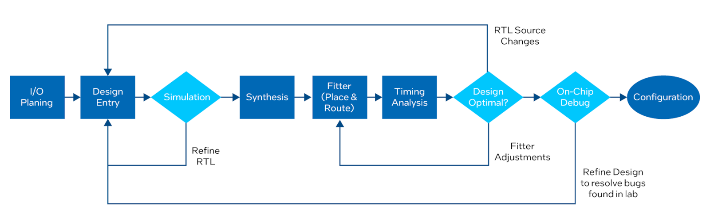
รูป: ขั้นตอนการออกแบบวงจรลอจิก FPGA Design Flow (Source: Intel/Altera)
▷ กล่าวสรุป#
บทความนี้ได้นำเสนอหัวข้อที่เกี่ยวข้องกับพื้นฐานการออกแบบวงจรลอจิก โดยจำแนกตามหมวดหมู่ สำหรับผู้ที่สนใจเรียนรู้ และใช้เป็นแนวทางหรือทบทวนความรู้
บทความที่เกี่ยวข้อง
This work is licensed under a Creative Commons Attribution-ShareAlike 4.0 International License.
Created: 2023-07-08 | Last Updated: 2023-07-09